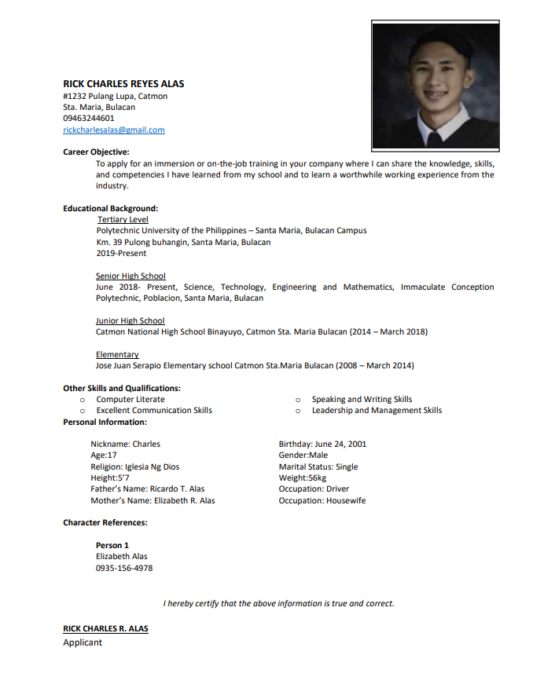

ABOUT ME
Rick Charles Alas
Hello there! I'm Rick Charles, a passionate 3rd-year college student pursuing a degree in Information Technology (IT).
My journey in the world of technology began with a keen interest in understanding how computers work and their applications in our everyday lives.
Over the years, I've acquired a solid foundation in IT, and I'm always eager to learn more and explore the latest advancements in this ever-evolving field.
I am currently enrolled in Polytechnic University of the Philippines, majoring in Bachelor of Science in Information Technology.
Throughout my academic journey, I have gained a strong understanding of core IT concepts such as programming languages, database management, networking, system analysis, and web development. My coursework has not only equipped me with theoretical knowledge but also provided ample opportunities for practical applications, enabling me to solve real-world IT challenges.
Looking ahead, I'm enthusiastic about exploring specialized areas within IT, such as cybersecurity or data science, to further expand my skillset. I also plan to pursue internships or part-time opportunities to gain hands-on experience in a professional IT environment. Ultimately, I aspire to contribute to cutting-edge technological advancements, making a positive impact on society through the application of IT solutions.
Resume

SERVICES

Web Designer
Every business is unique, and your website should reflect that. I offer custom web design services tailored to your specific needs and brand identity. Whether you require a corporate website, e-commerce platform, or personal blog, I'll create a responsive and mobile-friendly design that seamlessly adapts to different devices and screen sizes.
Data Analyst
As part of my services, I conduct Exploratory Data Analysis to uncover patterns, trends, and relationships within the data. Through data visualization techniques, I present insights in a visually compelling manner, making it easier for stakeholders to understand and interpret complex information.
Web Developer
I specialize in creating visually appealing and user-friendly websites that cater to the unique needs of businesses and individuals. From simple static sites to complex e-commerce platforms, I can build custom solutions that align perfectly with your brand and objectives. My focus is on delivering intuitive navigation, responsive layouts, and seamless user experiences.